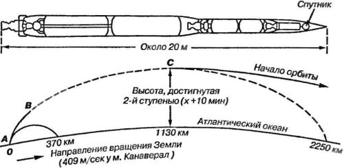
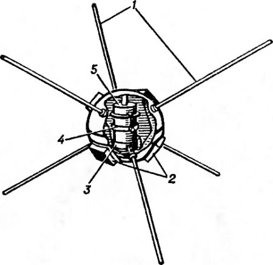
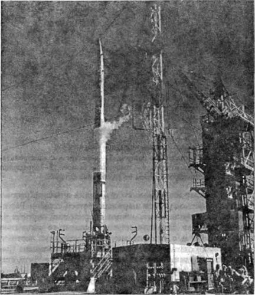

Метаморфозы программы «Vanguard»
Разумеется, в рамках такой серьезной программы, как «Авангард» («Vanguard»), рассматривалось несколько вариантов как самого спутника, так и ракеты-носителя, которая сможет вывести его на орбиту.
Например, со своей версией «Авангарда» выступили Курт Штелинг, сотрудник Морской исследовательской лаборатории, и Раймонд Миссерт из университета штата Айова, Они предложили произвести запуск облегченного искусственного спутника, предварительно поднятого на большую высоту с помощью воздушного шара
Конструктивная схема Штелинга-Миссерта была следующей: первая ступень представляла собой связку из четырех пороховых ускорителей с тягой по 27 тонн каждый и с продолжительностью работы 7–8 секунд; эти ускорители должны были весить вместе около 5400 килограммов при весе полезной нагрузки порядка 680 килограммов — таким образом, воздушному шару пришлось бы поднять всего 6100 килограммов. Начальное ускорение должно было составить 19 g, а высота пуска ракеты — 24 километров. Предполагалось, что к моменту полного выгорания топлива в двигателе первой ступени на высоте около 32 километров скорость ракеты возрастет до 2,377 км/с.
Вторая ступень представляла собой ракету с жидкостным реактивным двигателем общим весом до 560 килограммов. Эта ракета несла в качестве полезной нагрузки аппаратуру управления (22 килограмма) и третью ступень (90 килограммов). Двигатель ракеты должен был работать в течение 80 секунд, обеспечивая тягу 1800 килограммов. Начальная перегрузка в момент отделения первой ступени предположительно составляла лишь 2,6 g. Если бы вторая ступень продолжала двигаться по вертикали, то при выключении двигателя она могла бы набрать высоту в 320 километров и иметь скорость 4,8 км/с. Но при отклонении второй ступени от вертикали и переходе на круговое движение по орбите она могла оказаться в момент выключения двигателя на высоте всего лишь в 240 километров и иметь скорость порядка 5150 м/с.
Третьей ступенью должна была служить пороховая ракета на долгогорящем топливе с тягой 900 килограммов и продолжительностью горения 20 секунд, по истечении которых ракета выходила бы на орбиту на высоте 320 километров, двигаясь со скоростью 8 км/с, то есть на 120 м/с быстрее, чем это необходимо для данной орбиты. Если же траектория подъема оказалась бы другой, то ракета в этот момент достигла бы высоты всего лишь 240 километров, но зато двигалась бы со скоростью 8,13 км/с, которая на 150 м/с превышает необходимую.
Если произвести запуск этой ракеты из точки, расположенной на уровне моря, то двигатель первой ступени следует выключить на высоте 7 километров. Вторая ступень при этом будет иметь конечную скорость 4,1 км/с, а третья ступень поднимется на высоту 240 километров, но ее скорость будет недостаточна для движения по орбите. В качестве воздушного шара предполагалось использовать полиэтиленовый шар «Скайхук» емкостью 85000 м .
Примерно через месяц после того, как был предложен запуск ракеты с воздушного шара, несколько авторов предложили заменить воздушный шар реактивным самолетом. Их доводы были простыми, но вескими: несмотря на то что современные реактивные самолеты могут поднять полную трехступенчатую ракету только на высоту около 12 километров вместо необходимой высоты в 21 километр, сопротивление атмосферы будет здесь не очень большим. В то же время реактивный самолет может не только сообщить ракете свою собственную скорость порядка 1000 км/ч (290 м/с), но и осуществить запуск под желаемым углом. Наконец, запуск ракеты с самолета позволяет сократить стоимость эксперимента и сделать его технически более простым.
Несмотря на известные преимущества, которые давал «авиационный запуск», при осуществлении проекта «Авангард» было решено все же придерживаться «классической» схемы старта трехступенчатой ракеты с Земли по вертикальной траектории.
Наибольший прирост скорости за счет вращения Земли может быть получен там, где линейная скорость вращения Земли наибольшая, то есть на экваторе, где она достигает примерно 1600 км/ч. Эта скорость будет еще большей, если стартовую позицию выбрать на вершине горы, расположенной на экваторе; при этом можно будет в значительной мере избежать и сопротивления наиболее плотных слоев атмосферы. Очень подходила бы для этого гора Кения в Восточной Африке, лежащая почти точно на экваторе и имеющая высоту 5194 — метра, если бы не требование, которое заключается в том, что к востоку от места пуска должно находиться море (это дает возможность первой и второй ступеням упасть в воду). В то же время Кению от Индийского океана отделяет большой участок суши протяженностью около 650 километров. Поэтому запуск ракеты со спутником решено было проводить с корабля или с островной базы — например, с острова Джонстона в Тихом океане.
Хотя на таком острове, так же как и в районе Кении, нет достаточной промышленной базы, однако доставка туда ракеты и оборудования морем не вызвала бы особых трудностей. И все же запуск спутника с острова был делом будущего. Первые же запуски предполагалось производить в континентальной части США, неподалеку от развитых промышленных районов. Требование о расположении стартовых позиций на берегу моря заставило руководителей проекта выбрать для запуска базу ВВС Патрик во Флориде.
8 декабря 1956 года с этой базы в соответствии с программой работ по спутнику был произведен первый пробный старт. Запущенная ракета пока еще не была носителем спутника — в этот раз взлетела всего лишь большая ракета «Викинг» № 13, снабженная соответствующими приборами для испытания наземного оборудования. Она поднялась на высоту 200 километров и упала в море на расстоянии 290 километров от базы.
Необходимо отметить, что трехступенчатые ракеты-носители спутника программы «Авангард» резко отличались от обычных ракет. Прежде всего у них не было оперения, так как стабилизация первой ступени осуществлялась по тому же принципу, что и в ракетах «Викинг», то есть посредством отклонения оси двигателя, установленного на карданном подвесе.
Предназначавшаяся для запуска спутника ракета «Авангард» состояла из трех ступеней. В первой ступени ракеты, построенной фирмой «Мартин Эйркрафт Компани» («Martin Aircraft Co.»), был использован двигатель «Х-405» фирмы «Дженерал Электрик», развивающий на уровне моря тягу 8200 килограммов в течение 150 секунд. Подача топлива осуществлялась в нем обычным турбонасосным агрегатом, а в качестве окислителя применялся жидкий кислород. Топливо в ходе разработки несколько раз подвергалось изменениям: сначала было решено использовать бензин с добавкой 5 % спирта; затем было предложено ракетное топливо JP-4, однако разброс характеристик горения и тяги при этом топливе был почти таким же, как и при смеси бензин — спирт. После этого было применено топливо RP-1, которое в конечном счете пришлось заменить тяжелым топливом UMF-1.
Вторая ступень с двигателем была создана фирмой «Аэроджет Дженерал» («Aerojet General»). Окислителем в ней служила азотная кислота, а топливом — несимметричный диметилгидразин. Третья ступень работала на твердом топливе.
Процесс запуска спутника должен был выглядеть следующим образом. После вертикального старта ракета отклоняется в юго-восточном направлении, поэтому полного использования скорости вращения Земли не происходит. Отклонение ракеты от вертикали в конце работы двигателя первой ступени составит угол в 45°. В момент выключения двигателя ракета будет находиться на высоте 58 километров и на несколько меньшем расстоянии по горизонтали от места старта.

Сразу после отделения первой ступени начинает работать двигатель второй ступени, при этом угол наклона траектории к горизонту непрерывно уменьшается. Все приборы управления находятся во второй ступени ракеты. В головной части третьей ступени под защитой обтекаемого конуса устанавливается сам искусственный спутник. С началом работы двигателя второй ступени ракета поднимается на такую высоту, что всякая необходимость в обтекаемом конусе отпадает и он становится бесполезным грузом. Поэтому вскоре после начала работы двигателя второй ступени носовой конус сбрасывается.
Окончание работы двигателя второй ступени совпадает с подъемом ракеты на высоту порядка 225 километров. Далее вторая ступень по инерции поднимается, в зависимости от угла наклона, до высоты 320–480 километров. Эта высота достигается ракетой через 10 минут после старта на удалении 1130 километров от места пуска, после чего вторая ступень отделяется и падает в океан, пролетев в общей сложности по горизонтали около 2250 километров.
В течение некоторого времени после выключения двигателя второй ступени вторая и третья ступени продолжают по инерции набирать высоту, оставаясь соединенными друг с другом. В какой-то определенной точке пассивного подъема ракета начинает вращаться, обеспечивая тем самым стабилизацию третьей ступени. Как только ракета достигает максимальной высоты и выходит на участок траектории, параллельный поверхности Земли, включается двигатель третьей ступени, а вторая ступень отделяется от нее.
После этого третья ступень, двигаясь по касательной к поверхности Земли, вылетает за пределы земной атмосферы. Во время пассивного подъема второй и третьей ступеней, естественно, теряется часть скорости, поэтому третья ступень начинает активный полет со скоростью, составляющей примерно половину орбитальной скорости, то есть не более 3,2 км/с. Когда в двигателе третьей ступени выгорает все топливо, она развивает скорость, необходимую для движения по орбите; в этот момент спутник и должен быть отделен от третьей ступени. Механизм, разработанный для этой цели, представляет собой сжатую пружину, которая отпускается по сигналу инерционного отметчика времени, рассчитанного на период работы двигателя третьей ступени. Растягиваясь, эта пружина выталкивает сферический спутник из ракеты-носителя. Это отделение происходит со скоростью всего лишь 0,9 м/с относительно ракеты-носителя, поэтому, окончательно отделившись от спутника, третья ступень (ракета-носитель) также продолжает движение по орбите, становясь вторым спутником Земли.

Интересно, что специалисты, работавшие над программой «Авангард», предлагали при одном пуске получить не два, а сразу три спутника! Это могло быть сделано за счет установки в ракете-носителе так называемого «подспутника», представляющего собой сложенный пластмассовый воздушный шар, покрытый алюминиевой фольгой и имеющий диаметр основного спутника (50 сантиметров). В этом воздушном шаре предполагалось установить небольшой газовый капсюль, который наполнил бы шар после его отделения от ракеты-носителя.
Орбита искусственного спутника Земли должна быть эллиптической. Самой низкой точкой ее (перигей) будет то место, где произойдет выгорание топлива в двигателе третьей ступени. Так как высота перигея и высота при полном выгорании топлива одинаковы, определить расстояние до перигея довольно легко. Самая высокая точка орбиты (апогей) расположена в прямо противоположном направлении от перигея. По предварительным расчетам по проекту «Авангард», высота спутника в апогее должна была составить 1300 километров, но в дальнейшем эта цифра была увеличена до 2000 километров.

Сам спутник также претерпел изменения в ходе работ над проектом. Первоначально планировалось, что спутник «Авангард» будет весить около 9 килограммов. Такой спутник уже можно было оборудовать некоторыми измерительными приборами. Имея на борту небольшой источник питания и фотокамеру, спутник мог бы передавать цветные изображения на Землю.
Однако запуск первого советского спутника, состоявшийся 4 октября 1957 года, смешал все карты. В конечном виде спутник «Авангард-1» («Vanguard-1») весил всего 1,36 килограмма и имел на борту только два примитивных передатчика, передающих сигналы на частотах 108 и 108,03 МГц. Первый получал питание от аккумуляторной химической батареи мощностью 10 мВт, второй — от шести солнечных батарей суммарной мощностью 5 мВт, установленных на внешней поверхности спутника.